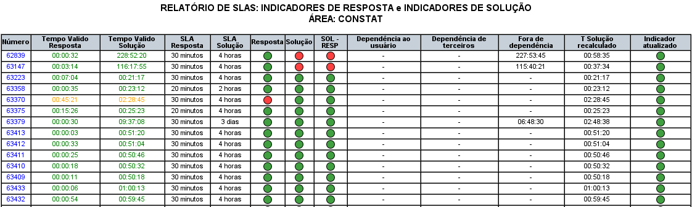
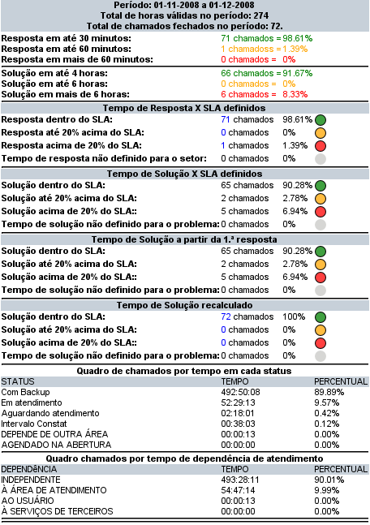

Relatórios e Estatísticas
SLAs: Considero esse o relatório mais importante do OcoMon. Através desse relatório é possível obter as informações sobre os tempos de resposta e solução de um dado período bem como verificar se estes atenderam as expectativas de SLA. Esse relatório pode servir de base para a tomada de decições sobre os processos de atendimento, identificando problemas e possíveis soluções.

Relatório de SLAs - versão 2.0rc3
Entendendo as informações:
Número: é o número da ocorrência/chamado, ao clicar no número será exibida uma nova tela com os detalhes da ocorrência.
Tempo válido Resposta: é o tempo decorrido desde a abertura do chamado até sua primeira resposta. Somente é considerado o tempo válido, isto é, são desconsiderados os períodos fora do horário de atendimento,
feriados e finais de semana.
Tempo válido Solução: é o tempo decorrido desde a abertura do chamado até sua conclusão no sistema. Assim como no tempo de resposta, somente é considerado o tempo válido do período.
SLA Reposta: é o tempo esperado como tempo de reposta para o chamado em questão. Esse tempo é baseado no setor origem do chamado.
SLA Solução: é o tempo esperado para conclusão do chamado em questão. Esse tempo é baseado no tipo de problema para qual o chamado foi classificado.
Resposta: esse semáforo indica se o tempo de resposta atingido pelo chamado está dentro do esperado ou não. Existem 3 tipos possíveis de semáforos:
- verde: quando o tempo atingido estiver dentro do esperado;
- laranja: quando o tempo atingido for até 20% superior ao esperado;
- vermelho: quando o tempo atingido for superior a 20% do esperado;
Solução: esse semáforo indica se o tempo de solução atingido pelo chamado está dentro do esperado ou não. A legenda dos semáforos é idêntica à citada à cima.
Sol - Resp: esse semáforo indica o tempo de solução do chamado a partir da primeira resposta e não a partir da abertura do mesmo.
Dependência ao usuário: o tempo em que o chamado esteve nesse tipo de dependência é descontado do tempo total de vida do chamado. Esse tipo de situação é útil quando existe algum impedimento por parte do usuário solicitante impossibilitando a conclusão da ocorrência por parte da equipe técnica.
Dependência de terceiros: o sistema contabiliza o tempo em que os chamados permanecem pendentes em função de terceiros, no entanto esse tempo não é descontado do tempo total do chamado visto que não é da responsabilidade do usuário.
Fora de dependência: o tempo em que o chamado esteve com esse tipo de dependência também é descontado do tempo geral do chamado.
Para maiores informações sobre o funcionamento dos níveis de dependência acesse a página de informações dos tipos de status dos chamados.

Resumo das informações do relatório de SLAs - versão 2.0rc3
Resumo das informações
A tela à cima exibe o resumo das informações sobre os chamados do período informado.
Problemas por área de atendimento
Esse relatório retorna a quantidade de chamados por problema em um dado período. É possível selecionar chamados de uma área de atendimento específica ou de todas as áreas cadastradas. É útil para identificar os principais problemas que ocorrem no parque e avaliar possíveis ações preventivas.
Locais mais atendidos
Agrupa os chamados de um dado período por seus locais/setores de origem. É possível selecionar chamados de uma área de atendimento específica ou de todas as áreas cadastradas. A partir desse relatório pode-se perceber , por exemplo, a necessidade de treinamento para algum departamento em específico dentro da organização.
Geral
Esse relatório permite a utilização de uma série de critérios para pesquisa. O resultado é uma listagem, por período, de todos os chamados que atenderem os critérios estipulados para sua geração.
Esse relatório permite a saída em dois formatos diferentes, para isso basta selecionar o campo "Tipo de Relatório".
Até a versão 2.0rc3, a logomarca que aparece ao selecionar o tipo de relatório: "Relatório 1 linha" está fixa no código do sistema, porém sua alteração é simples, para isso basta substituir os logos (arquivos de imagens) que estão no diretório de instalação do OcoMon, na pasta includes/logos por suas imagens, mantendo o mesmo nome e tamanho (preferencialmente).
Relatório de chamados por equipamentos
Defina uma área de atendimento (ou todas) e um período e o retorno será um quadro dos chamados do período informado agrupados por equipamento. Esse relatório é útil para identificar reincidências.
Dica: ao clicar no número de qualquer etiqueta listada (coluna etiqueta) será aberta uma janela com as informações de configuração do equipamento. A partir dessa tela (de configuração) é possível ter acesso direto às suas ocorrências clicando no link superior: "
Ocorrências".
Gerência do Helpdesk
O objetivo desse relatório é retornar um compilado com as principais informações dos chamados dentro do período informado. Atualmente (versão 2.0rc3) esse relatório
não está concluído.
Atendimentos por técnico
Esse relatório retorna um quadro com o total de ocorrências de um dado período agrupadas por técnico/operador. Essa informação considera que o técnico/operador que
concluiu o chamado no sistema.
Atendimentos por usuário
Esse relatório retorna um quadro com o total de ocorrências de um dado período agrupadas pelo usuário solicitante (campo
Contato, na tela de
abertura de chamados) do chamado.
Quantidade de chamados: Área x Período
Esse relatório retorna um quadro com o total de chamados por área de atendimento em um dado período.
Dica: ao clicar no número de chamados fechados, será exibida a listagem dessas ocorrências.
Chamados abertos pelo usuário final
Esse relatório retorna um quadro com o total de chamados abertos pelo
usuário final em um dado período. Também é possível verificar os SLAs alcançados especificamente para esses chamados, para isso clique no link
SLA's na mensagem "Verifique os SLA's atendidos".
Dica: ao clicar no número correspondente à quantidade de chamados serão exibidos todos os chamados abertos pelo respectivo usuário final.
Quantidade de chamados x categoria de problema
Esse, juntamente com o relatório de SLAs é um dos mais importante para o gerenciamento de chamados. A partir desse relatório é possível visualizar as ocorrências agrupadas por suas
categorias e sub-classificações de um dado período.
Dica: ao clicar no número correspondente à quantidade de ocorrências será exibida a listagem dos respectivos chamados.